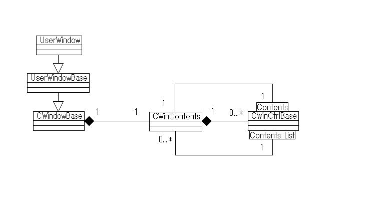

CWinContents¶
CWinContents has a role as a container for holding the various controls .
CWinContents is used in the following part.
CWindowBase has a CWinContents. Thereby , a window can have some controls.
CWinCtrlBase has a CWinContents. (This window system calls it the contents. Please refer to here ).
CWinCtrlBase has it in a list form. This window system calls it the contents list.
The first two are defined structure by the window script.
The contents list(third) has a lot of contents by the list form.
Functions/Methods¶
-
WinCtrl
find<WinCtrl>(uint ctrlId)¶ Parameters uint ctrlId: Control ID It finds the control of the ID. If it does not exist in the contents , this function recursively searches into the contents of the control. However , this function does not search into the contents list. Thus , control is determined always unique.
-
int
getIndex(uint ctrlId)¶ Parameters uint ctrlId: Control ID It looks for whether the specified control ID is stored in what number. If not found , it returns -1. This function does not search recursively unlike the 「find」.
you can use a index value as an argument of [N]. Thereby enabling high-speed access.
-
CWinCtrlBase this[N] You can use the index value obtained by 「 getIndex 」.
-
int
count¶ It returns the number of controls in the contents.
-
ClipRect::State
clipState¶ It uses for the contents included within the contents list. (ex: LISTBOX , LISTBOXEX ).
- ClipRect.State.Inside
Completely within the region
- ClipRect.State.Clipped
Clipping is necessary.
- ClipRect.State.Outside
Rendering is unnecessary (completely outside the region)
-
float
width¶ Get the width of the contents. It is automatically calculated from the size of the control.
-
float
height¶ Get the height of the contents. It is automatically calculated from the size of the control.
-
Vector2
size¶ Get the size of the contents. It is automatically calculated from the size of the control.
-
Vector3
position¶ Display position of contents
-
CWinCtrlBase
parent¶ Get a parent of this contents.
if the parent of this contents is CWindowBase ,it returns a null.